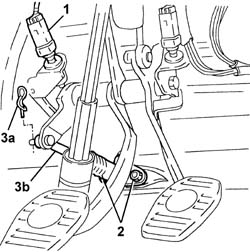
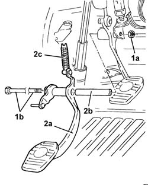

3330B27 clutch pedal - r r for rhd versions
- Path
- Procedures > 33 BRAKING SYSTEM > 3330 HYDRAULIC BRAKING SYSTEM > 3330B pedal unit > 3330B27 clutch pedal - r r for rhd versions
- Kind
- repair procedure (removal / refitting; the operation number is the code)
- Applies to
- engines: 1.6 TS, 2.0 TS; all production periods
- Interactive page
- https://sloeber94.github.io/elrnDB-a147/en/#/3025227
Applies to: engines: 1.6 TS, 2.0 TS; all production periods
 Removing
Removing
 Refitting
RefittingRemove the climate control unit. 5040C10 air conditioner box - r+r
1. Remove the clutch pedal switch from its seat without disconnecting the electrical connection.
2. Loosen the nuts retaining the master cylinder to the pedal unit.
3. Remove the split pin (3a) and disconnect the master cylinder (1b) from the clutch pedal.

Applies to: engines: 1.6 TS, 2.0 TS; all production periods
1. Undo nut (1a) and remove pin (1b) securing the brake and clutch pedal to the pedal unit.
2. Remove the clutch pedal (2a) complete with bush (2b) and counterspring (2c).

Applies to: engines: 1.6 TS, 2.0 TS; all production periods
Refitting
RemovingCheck the clutch pedal is undamaged.
Fit the clutch pedal with bush and reaction spring.
Fit the pedal retaining pin and tighten the nut.
Connect the master cylinder to the clutch pedal and secure it with the split pin.
Tighten the master cylinder retaining nuts.
 | Fastening | Component | Ø | Value (daNm) |
|---|---|---|---|---|
- | Nut | CLUTCH FLUID MASTER CYLINDER | M8 | 1.8 ÷ 2.4 |
Fit the clutch pedal switch in its seat.